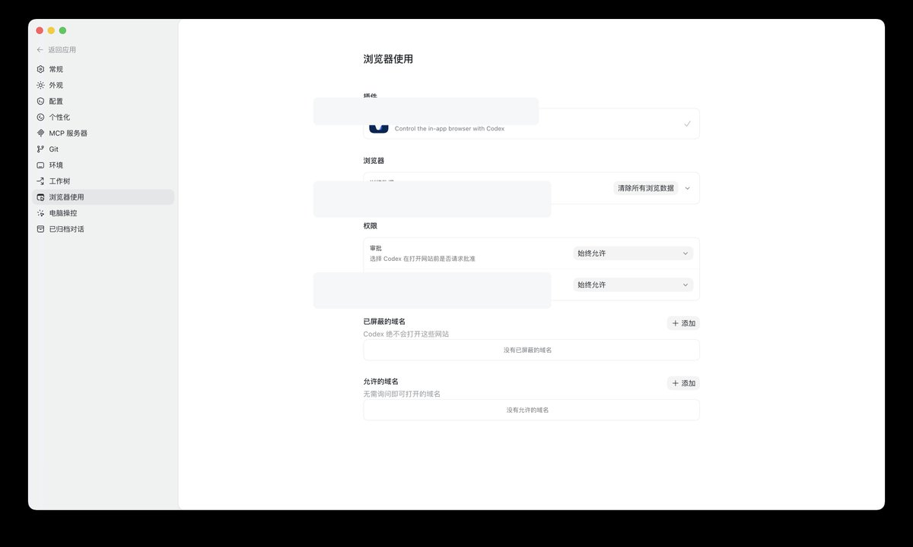
最近我发现，很多人第一次接触 Codex App 的反应不是“哇，好强”，而是：
这玩意儿到底从哪开始使用？需不需要我配置一大堆东西？
左边一堆入口，中间是聊天，右边又会弹出网页、图片、文档、来源、代码变化。设置里还有一堆看起来很技术的东西。
作为小白，困住你的大概率不是不想用Codex，而是压根不知道如何第一次上手Codex。
所以这篇文章不是技术类文章，我会按一个普通人的使用路线抽丝剥茧地来讲清楚：
Codex App 到底是什么。
本地 App、云端 Codex、普通 ChatGPT 的区别。
打开 App 后，左边、中间、右边分别是干什么的。
设置页每个目录到底管什么。
普通对话和项目对话有什么区别。
插件、技能、MCP、自动化、Git 这些词怎么理解。
哪些地方小白最容易点错。
本文基于 Mac 版 Codex App 实测整理。
Codex版本：Codex 26.429.30905。
Codex App 更新很快，你看到的按钮名称和位置可能会有一点变化，但核心逻辑基本一样。
```
请按文件逐个解释这次改动，用非程序员能懂的话说。
```
一、Codex App 到底是什么
一句话：Codex App 是一个把 AI Agent 放进你电脑里的工作台，只要你能在电脑上做的操作，它基本上也都能做，而且它会做的更完美、更高效。
说白了，它不是一个你问一句，它答一句的普通聊天框。Codex App 更像是你的助理，它可以：
和你聊天。
读你指定的本地文件。
搜索网页。
打开内置浏览器。
生成图片、文档、PPT、网页、代码等结果。
用插件连接 Gmail、GitHub、Google Drive、Slack 等外部工具。
设置自动化，定期帮你检查、总结或继续任务。
如果你是非程序员，可以先把它理解成：
一个更偏“做事”的 ChatGPT。
它不是只回答“怎么做”，而是很多时候可以直接帮你“做一遍”。
但也正因为它能做事，所以你必须理解它的界面和权限。不然你会不知道它到底是在本地电脑上做事，还是在云端任务里做事，也不知道它什么时候会碰到你的文件。
先看一张打开后的整体界面。
这张图先不用看细节。你只要记住：左边是导航栏，中间是你和 Codex 对话的地方，右边有时会出现结果、来源、预览和代码变化。
这就是 Codex App 和普通聊天框最大的差别：它不是只有“问答”，它还有“工作现场”。
二、下载和登录
Mac 用户建议只从 OpenAI 官方入口下载 Codex App：
https://openai.com/codex/
安装方式和普通 Mac App 差不多：
下载 Codex App。
打开安装包。
把 Codex 拖进“应用程序”。
从启动台或应用程序里打开 Codex。
用你的 ChatGPT / OpenAI 账号登录（普通账号也有一定的免费额度）

三、本地 Codex App、云端 Codex、普通 ChatGPT 有什么区别
在开始介绍Codex App之前，我把Codex App和云端Codex以及普通Chatgpt的区别先理一下，因为很多人一直没搞清楚这三者的区别。
名字 大白话解释 适合做什么 ChatGPT 普通对话 一个网页或 App 里的助手 问问题、写文案、解释概念、生成文件、生成图片 Codex App 本地版 装在你电脑上的 AI 工作台 普通ChatGPT能做的都能做，最大的区别就是能轻松地读取本地的文件。 云端 Codex 在云端环境里跑的 AI Agent 有时候电脑关机了本地Codex APP就用不了了，如果在云端上跑任务，那就不受本地电源的限制，因为是跑在官方服务器上面的。
小白先记住一个判断标准就够了：
一般任务：用普通对话。
要处理本地文件或项目：用 Codex App 里的项目。
要让 Codex 在远程环境里持续跑任务：用云端 Codex。

四、主界面地图：左边、中间、右边
第一次打开 Codex App，可能有点懵逼，因为上面的功能还是有点多的，毕竟人家是“超级工作台”嘛！
区域 它是干什么的 小白最常用的动作 左边导航栏 找入口、找项目、找对话 新对话、切换对话、连接插件和设置自动化任务 中间对话区 你和 Codex 真正交流的地方 输入需求、让Codex开始工作 右边结果区 展示证据和产物 看来源、预览网页/图片/PDF、看代码变化
下面这张图是插件页，但它很适合看 Codex 的整体布局：左边是导航，中间是主要内容，右边这次没有打开额外预览（一般有生成图片、代码或者网页，就可以在右边预览）。
五、左侧导航栏：你从这里进入不同工作流
左边是 Codex 的入口区。
```
用小白能听懂的话，解释一下 Codex App 和 ChatGPT 的区别。
```
常见入口包括：
1. 新对话
大白话：开一个全新的聊天任务
适用时机：不想沿用旧上下文、清空之前聊天记录重新提问时
2. 搜索
大白话：查找历史对话、命令以及相关文件
适用时机：忘记之前聊过的内容，需要回溯查看记录时
3. 插件
大白话：给 Codex 增加外部拓展能力
适用时机：需要连接 Gmail、GitHub、Drive、Slack 等第三方工具时
4. 自动化
大白话：让 Codex 定时或延后自动执行任务
适用时机：想要每日自动总结、定期检查内容、延后继续处理任务时
5. 项目
大白话：让 Codex 针对指定文件夹、代码仓库开展工作
适用时机：需要它读取文件、修改文件、运行本地命令时
6. 普通对话
大白话：不绑定任何项目的纯聊天模式
适用时机：查询概念、撰写文案、梳理思路、日常简单提问时
六、搜索：找回你之前做过的事
点左侧“搜索”，会弹出一个搜索浮层。
它的作用很简单：
找历史对话。
找之前跑过的项目任务。
找你忘记名字的上下文。
七、插件：给 Codex 装能力包
点左侧“插件”，会进入插件页。
插件其实就是给 Codex 装能力包。
比如：
Browser Use：让 Codex 操作内置浏览器。
Computer Use：让 Codex 操作 Mac 上的 App。
Spreadsheets：让 Codex 处理表格。
Presentations：让 Codex 做演示文稿。
GitHub：让 Codex 和 GitHub 工作流配合。
Gmail / Google Drive / Slack 这类：让 Codex 连接外部账号。
这里顺便把几个词讲清楚。
名词 大白话解释 例子 Plugin 插件 给 Codex 装一个能力包 装了表格插件，它就更会处理表格 Connector 连接器 连接外部账号或服务 连接 Gmail、GitHub、Google Drive Skill 技能 一套固定工作流说明书 “写教程时按我的风格来写” MCP 一种让外部工具接入 Codex 的方式 让 Codex 调用某个本地服务或工具
小白不用纠结这些名词的具体细节，只需要大概理解：
插件是能力包，连接器是接账号，技能是工作流说明书，MCP 是接工具的通道。
什么时候需要插件？
你想让 Codex 读 Gmail。
你想让 Codex 操作浏览器。
你想让 Codex 做 PPT、表格、文档。
你想让 Codex 和 GitHub、Slack、Linear 等工具协作。
小白建议：刚开始只用官方已经内置好的插件，不要急着装一堆，后续熟练了可以慢慢添加
```
这个权限会让你访问什么？为什么这个任务需要它？有没有更低风险的做法？
```
八、自动化：让 Codex 稍后或定期帮你做事
点左侧“自动化”，会看到自动化页面。

自动化就是让 Codex 在某个时间点，或按某个频率，自动执行一件你提前设置好的任务。
常见场景：
每天早上帮你整理某个项目状态。
每周检查一次某个仓库有没有问题。
半小时后继续当前线程。
定期监控某个网页、邮箱、任务列表。
定时生成日报、周报、复盘。
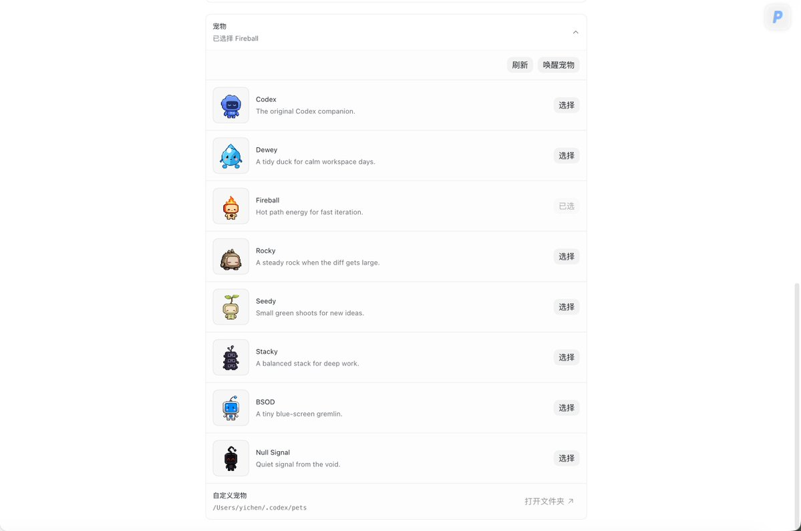
九、右侧结果区：产出物
Codex 的右侧区域可能出现：
生成出来的文件。
搜索来源。
网页预览。
图片预览。
PDF / 文档预览。
内置浏览器。
代码差异。
Git 变化。

你可以把右侧理解成：Codex 交作业的地方。
中间告诉你“Codex到底做了什么”，右边让你看“Codex到底产出了什么”。
十、设置入口：让Codex更好用
左下角有“设置”入口，这里面可能有很多小白陌生的设置，但是挨个认真看完，其实也能设置好，把Codex设置的更加好用。下面逐个介绍：👇
```
保留现在的结构，但把语言改得更口语化，并补充每一步的成功标志。
```
十一、设置页 1：常规
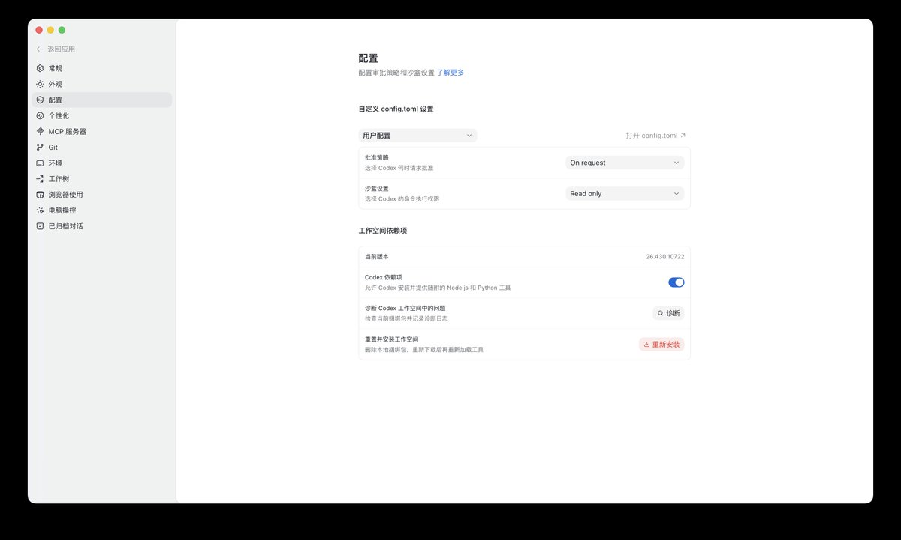
常规管的是 App 的基础使用习惯。
常见内容包括：
工作模式：更偏日常工作，还是更偏编程。
默认权限。
自动审核。
完全访问权限。
默认打开目标。
语言。
菜单栏显示。
运行时防止系统休眠。
长文本发送快捷键。
小白最应该关注四个地方。
第一个是工作模式。
如果你不是程序员，优先选更偏“日常工作”的模式。这样 Codex 的表达会少一点工程黑话。
第二个是权限。
权限越大，Codex 能做的事越多，但风险也越大。
如果你还不熟，别一上来就开最大权限，但是熟练了之后发现权限给的用多，需要操心的越少，使用Codex越丝滑，这个因人而异，大家可以按照自己的习惯设置。
第三个是发送方式。
长文本是否需要 Command + Enter 发送，这个会影响你写长需求时会不会误触，因为很多朋友不小心点击Enter就会发送，比如我。。。
第四个是语音输入
这个相当于全局键，打开了之后，不止是在Codex App内部，可以在电脑上任意一个对话框调用Codex的语音输入法。但是如果习惯了比如Typeless、豆包输入法的朋友就没有必要切换了。
十二、设置页 2：外观
外观管的是界面长什么样。
常见内容包括：
主题。
字体。
颜色。
代码展示样式。
差异对比样式。
字号或界面密度。
这个页面基本不影响 Codex 能不能完成任务，它只影响你看界面UI的时候舒不舒服。
但是有个新功能大家也许会感兴趣：可以在这个界面选择一只桌宠，然后再Codex对话框输入/宠物就能唤起一只陪伴大家工作的小可爱！
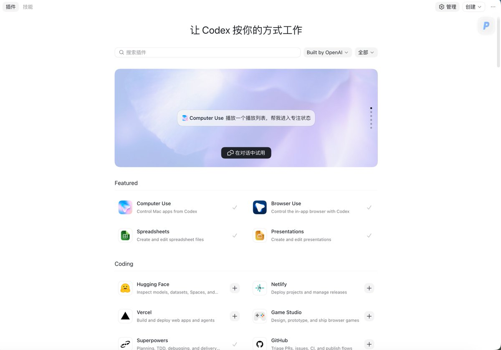
十三、设置页 3：配置

保持默认即可，不需要改。
十四、设置页 4：个性化
个性化管的是 Codex 怎么理解你。
这里通常会出现类似：
个人偏好。
自定义说明。
记忆或偏好相关设置。
让 Codex 按某种风格回答的规则。
你可以在这里写：
我更喜欢中文回答。
我不是程序员，请少用术语。
给我教程时要写成功标志和排查步骤。
修改代码前先解释影响。
涉及隐私文件时先提醒我。
小白建议写这种：
哪些别乱写？
不要把 API Key、密码、Cookie 写进去。
不要把私人身份证、银行卡、公司机密写进去。
不要写互相矛盾的规则。
十五、设置页 5：MCP 服务器
MCP 对小白来说第一次听见会有点懵，但是简单理解就是MCP 是让 Codex 连接外部工具的一条通道，大概意义和插件没啥区别。
比如某个工具提供了 MCP，Codex 就可以通过它读取数据、调用功能、执行操作。
一般不需要添加，就是用Codex内置的插件已经能满足99%的日常工作生活需求了。
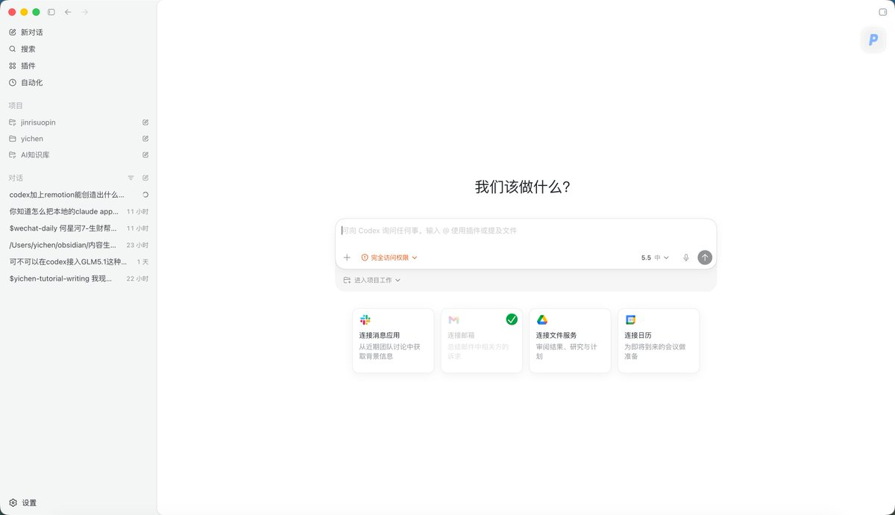
十六、设置页 6：Git
Git 是代码世界里的“版本记录系统”。
如果你不是程序员，可以先这样理解：
Git 像一个项目的时间机器，记录每次改了什么。
因为你需要知道：
它改了哪些文件。
哪些改动是新增的。
哪些改动是删除的。
能不能回退。
要不要提交。
但是总而言之，这些都是技术相关，小白第一次上手把这页的设置保持默认即可，不需要改变。
十七、设置页 7和8：环境和工作树
小白保持默认即可！
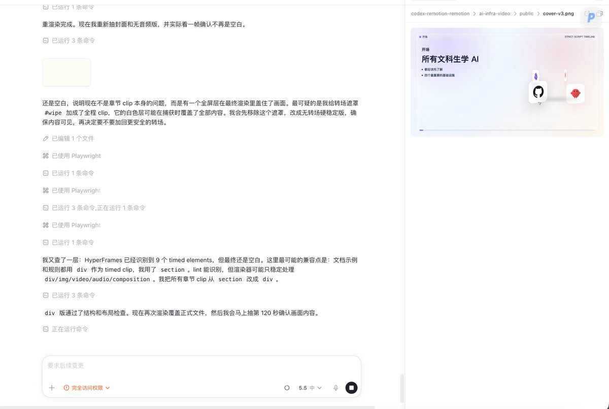
十八、设置页 9和10：浏览器使用和电脑操作
浏览器使用是指 Codex 能操作内置浏览器，这个功能非常实用，Codex 可以用它来：
打开网页。
搜索资料。
登录某些网站。
查看本地网页。
测试前端页面。
截图或检查页面效果。
直接在Codex App内部就完成相关操作，不需要再跳转到别的网页，十分便捷。

十九、设置页 10：电脑操控
电脑操控是让 Codex 操作 Mac 上的应用。
比如：
打开某个 App。
点击按钮。
查看界面。
处理一些可视化任务。
帮你在软件里完成一些流程。
这功能很非常非常强，可以说是我觉得Codex App最牛逼的一个功能，前端时间我才让它帮我从零到一写了一份法律检索报告（我只完成了登录几个网站的操作，别的搜索、探究网站内部结构、点击、整理资料全是它一次性完成），但是，也更需要谨慎。
因为它可能碰到：
微信。
邮箱。
浏览器。
文件管理器。
付费软件。
公司工具。
私人资料。
小白建议：第一次用电脑操控，最好只让它操作无风险 App，特别记住不要操作社媒账号和微信！！！！！
```
这个权限具体会让你做什么？有什么风险？我是小白，应该允许吗？
```
二十、设置页 11：已归档对话
已归档对话就是被你收起来的历史对话，它不是删除，更像是：一个没有时间限制的回收站，不会过期清理，想要找回来的时候随时在这里找回就行。
适合归档的内容：
已经完成的任务。
暂时不用的项目对话。
不想占用左侧列表的旧记录。
需要保留但不常看的过程。
二十一、跑一个普通对话：先从低风险任务开始
刚开始用 Codex，不建议直接让它改项目，先开启一个普通对话。特别建议打开“完全访问权限”，那一刻，会发现真的很爽，小白应该不会一上来就做什么惊人的操作，所以也不会有太大的安全风险，吧。。。
比如输入：
```
请默认用中文回答。
如果涉及代码，请先用大白话解释目的，再给具体操作。
如果要修改文件、运行命令、访问外部账号，请明确告诉我风险。
教程类内容请写成小白能照着做的步骤，并标注成功标志。
```
如果是做一个比较复杂的任务，建议打开“计划模式”，先梳理清楚思路，再开始做。
二十二、权限确认：非常重要！
Codex 可能会请求不同权限，你可以这样理解：
权限类型 意味着什么 小白怎么判断 文件访问 Codex 要读或改某个文件夹 看清楚路径是不是你允许的项目 终端命令 Codex 要在电脑上运行命令 不懂就让它先解释 浏览器 Codex 要打开网页或操作网页 避免付款、删除、发布类操作 第三方账号 Codex 要连接 Gmail、GitHub 等 看清楚授权范围 电脑操控 Codex 要操作 Mac App 边界一定要说清楚
小白最容易犯的错：看到确认按钮就点。千万不要这样，如果你看不懂，就问：

Codex 本身也可以帮你解释权限滴！～

二十三、常见踩坑和排查
1. Codex 一直在跑，不知道是不是卡了
先看左边对话状态，是在转圈还是蓝色的不动的点
如果它显示转圈，那就是没有结束。
如果它显示蓝色的点，就代表任务已经结束了
2. 它请求权限，我不知道能不能点
不要直接点，让它解释：
3. 它改了项目，我看不懂
让它解释 Git diff：

4. 生成结果不满意
不要重开。
直接基于结果继续改：

5. 插件太多，不知道装哪个
先别装，先用官方内置能力。
等你明确知道“我要让 Codex 连接某个工具”，再去插件页找。
6. 自动化跑偏
大概率是你的任务描述太泛，把任务精细化描述一下：
什么时候执行。
执行对象是什么。
输出什么。
不要做什么。
遇到问题怎么处理。
二十四、我的推荐使用路线
如果你是第一次用 Codex App，我建议按这个顺序来：
打开 App，先熟悉左侧导航。
新建一个普通对话，问一个低风险问题。
打开设置页，只看不改。
建一个干净演示项目，不要用私人项目。
让 Codex 读取项目，并生成一个简单 Markdown。
看右侧结果区。
让它解释它做了什么。
再尝试插件页和自动化页。
最后再碰 Git、MCP、电脑操控这些高级功能。
二十五、账号额度怎么选：Plus 够不够，Pro 什么时候值得
尽量用付费的会员账号登录，因为免费的真的经不起折腾。大佬级别的直接上pro，小白可以先plus尝尝鲜。
一些购买方法汇总：
小猫的20美金礼品卡订阅方法：https://x.com/lngkximo/status/2050761195750351026
gamsgo：https://www.gamsgo.com/partner/WsMzs，之前有200刀，现在好像缺货。
逸尘：我这边也提供plus和200刀pro的充值，但是基本上都和官方价格差不多，但是优点胜在不需要折腾，充值方式简单，不愿意浪费太多时间的大佬可以让我赚杯咖啡钱～联系：yichen365ai
二十六、写在最后
Codex App 是一个非常牛逼、而且非常适合普通人上手的超级APP，他比Claude Code的CLI界面更加好上手，非常符合小白的使用习惯。而且他能够操控电脑、读取本地文件，基本上只要是人类能做的软件操作他都能完成。
它的功能非常广泛：
聊天。
文件。
项目。
网页。
浏览器。
自动化。
Git。
第三方账号。
本地电脑权限。
所以小白第一次打开会懵，是很正常的，但是你要习惯使用它，慢慢地给他加插件、加Skill，最后把它培养成最合适的超级助手。
最后，祝你使用Codex愉快！


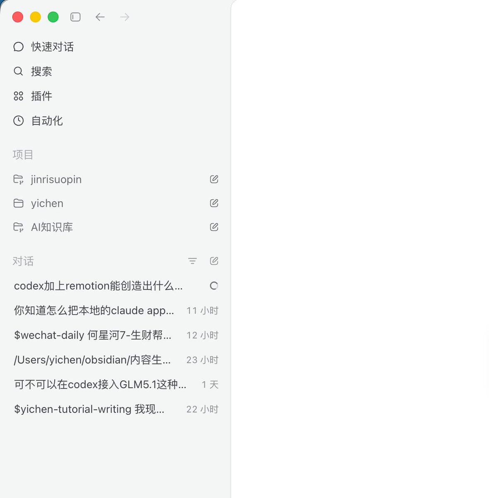
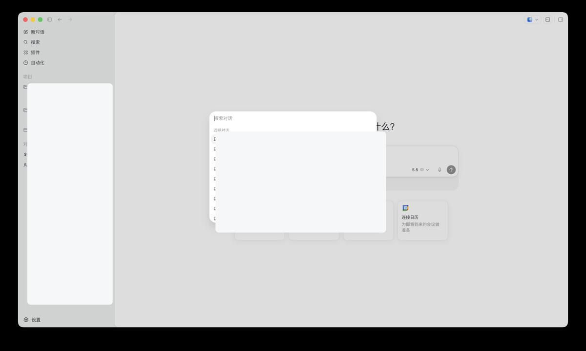

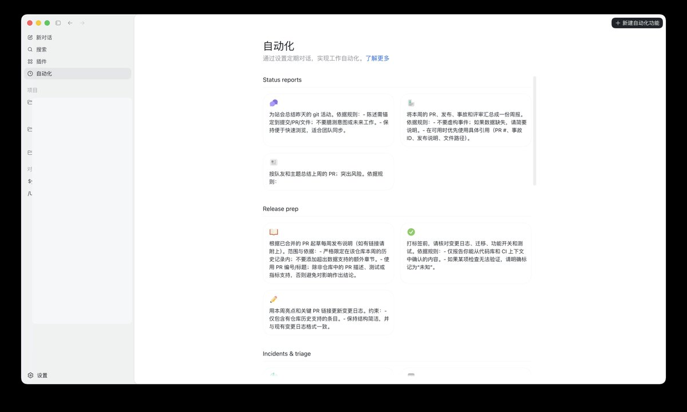

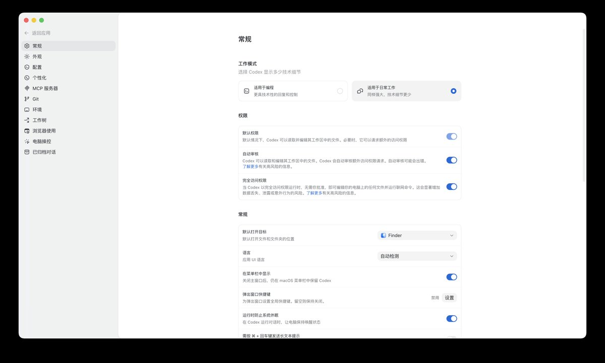
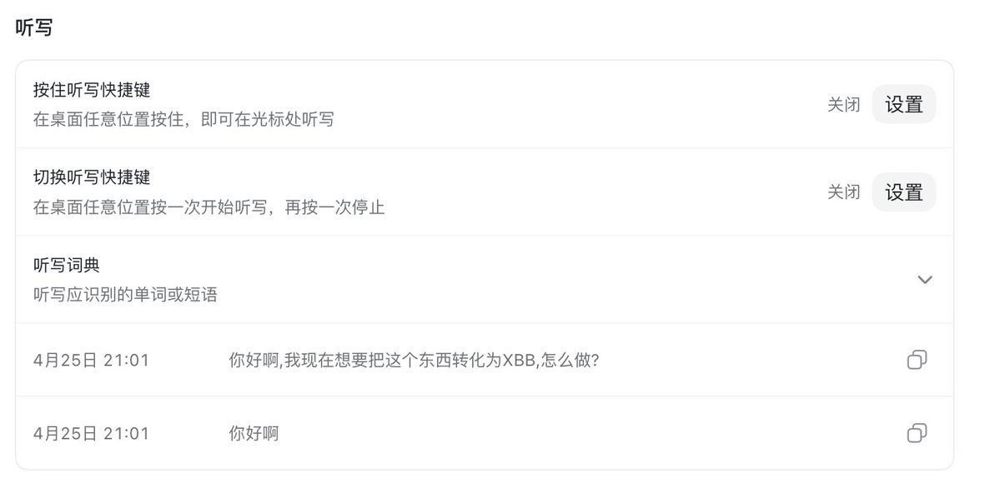
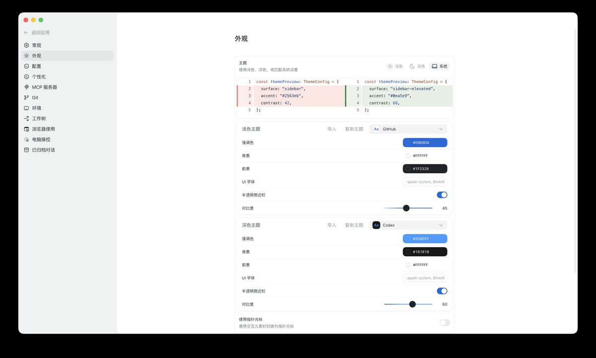


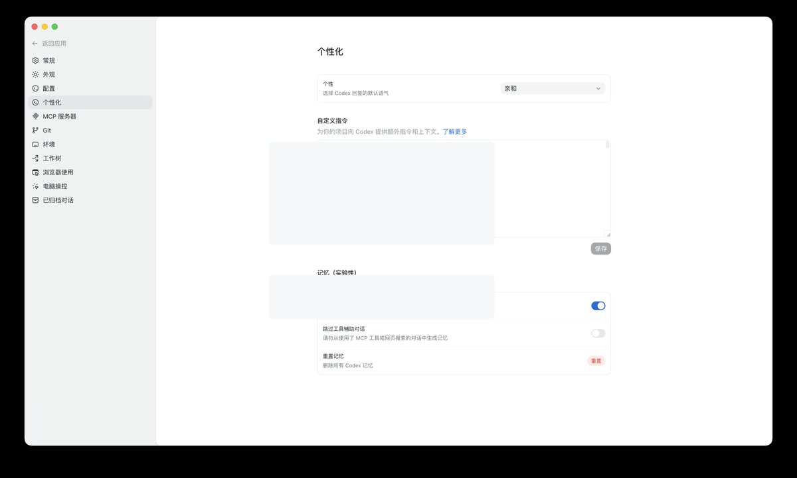
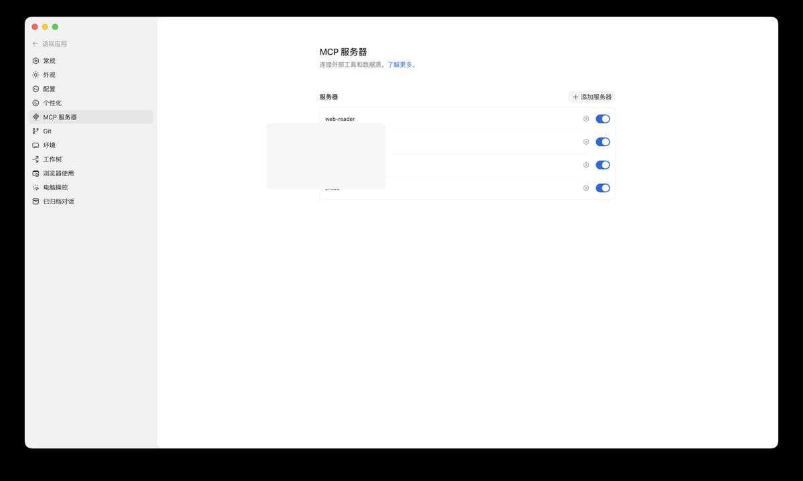
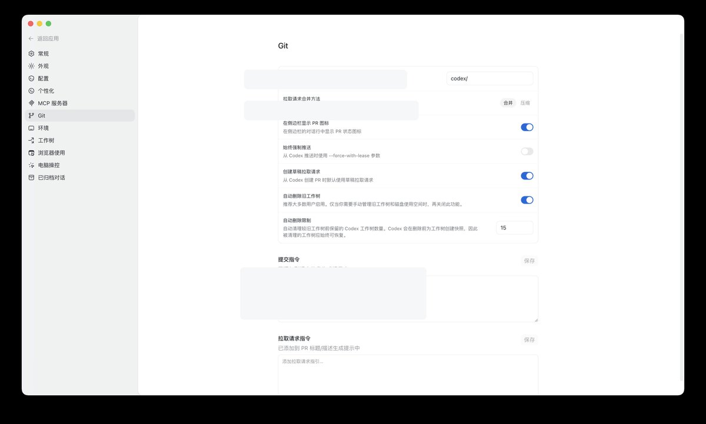
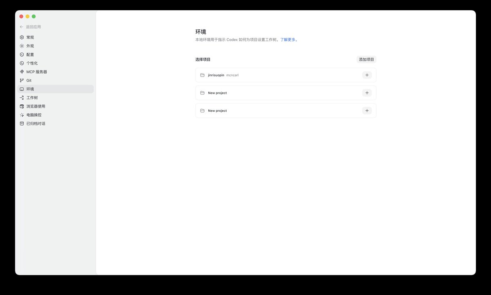

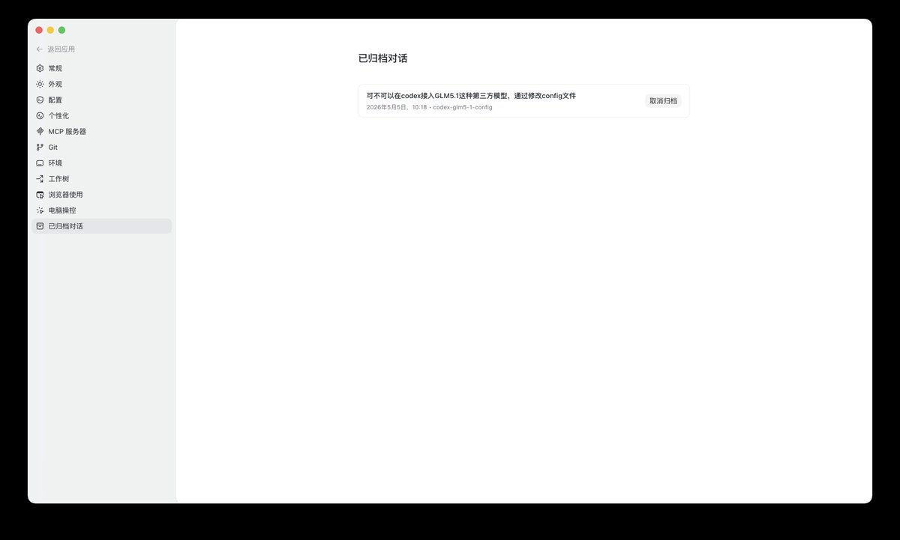
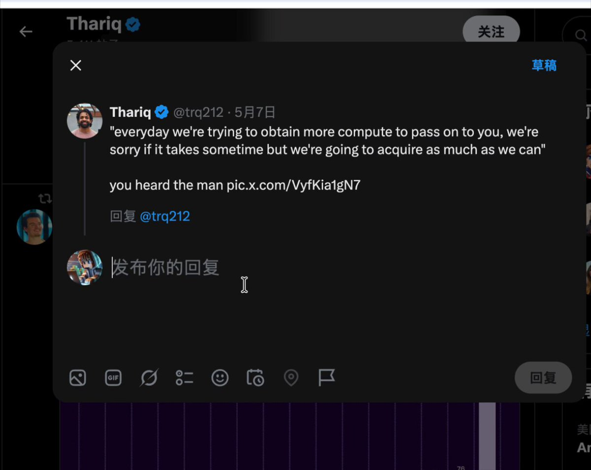
本記事では、Codex Appを初めて使う方に向けて、画面構成や設定項目を一つひとつ丁寧に解説します。
最近、Codex Appを初めて触った人の反応は「すごい！」ではなく——
「これ、どこから始めればいいの？」「いろいろ設定しなきゃダメ？」
左にはたくさんの入り口、真ん中はチャット、右にはウェブページや画像、ドキュメント、ソース、コードの差分が表示される。設定画面には、技術っぽい項目がずらり。
初心者がつまずくのは「Codexを使いたくない」からではなく、「最初の一歩の踏み出し方がわからない」からです。
だからこの記事は技術解説ではありません。一人の普通のユーザーがCodexをゼロから使えるようになるまでを、順を追って紐解いていきます。
Codex Appとは何か。
ローカルApp、クラウドCodex、通常のChatGPTの違い。
Appを開いたあと、左・中央・右はそれぞれ何をする場所か。
設定ページの各項目は何を管理しているのか。
通常チャットとプロジェクトチャットの違い。
プラグイン、スキル、MCP、自動化、Gitといった用語の理解。
初心者が一番押し間違えやすいポイント。
本記事はMac版Codex Appの実測に基づいて整理しています。
Codexバージョン：Codex 26.429.30905。
Codex Appは更新頻度が高いため、ボタン名や位置が多少変わることがありますが、コアロジックはほぼ同じです。
```
今回の変更をファイルごとに、非エンジニアでもわかる言葉で説明してください。
```
一、Codex Appとは何か
一言で言うと：Codex AppはAIエージェントをあなたのパソコンの中に置くワークベンチです。あなたがパソコンでできる操作は、基本的にすべてCodexもできます。しかもより完璧に、より効率的に。
つまり、質問したら答えるだけの普通のチャットボックスではありません。Codex Appは、むしろあなたのアシスタントです。以下のことができます：
あなたとチャットする。
指定したローカルファイルを読む。
ウェブ検索する。
内蔵ブラウザを開く。
画像・ドキュメント・PPT・ウェブページ・コードなどの成果物を生成する。
プラグインでGmail・GitHub・Google Drive・Slackなどの外部ツールと連携する。
自動化を設定し、定期的なチェック・要約・タスク継続を行う。
非エンジニアの方は、まずこう理解してください：
「作業する」ことに重点を置いたChatGPT。
Codexは「どうやってやるか」を答えるだけでなく、多くの場合そのまま「やってくれる」のです。
しかし「やってくれる」からこそ、インターフェースと権限を理解する必要があります。理解しないと、ローカルPC上で作業しているのかクラウドタスクで作業しているのか、いつファイルに触れているのかがわからなくなります。
まず、開いた直後の全体インターフェースを見てみましょう。
この図は細部まで見なくて大丈夫です。覚えてほしいのは：左がナビゲーションバー、中央がCodexとの対話エリア、右には結果・ソース・プレビュー・コード差分が表示されることがある、という3点です。
これこそがCodex Appと普通のチャットボックスの最大の違い：「Q&A」だけでなく「作業現場」があるのです。
二、ダウンロードとログイン
MacユーザーはOpenAI公式サイトからのみCodex Appをダウンロードすることを推奨します：https://openai.com/codex/
インストール手順は通常のMac Appと同様です：
Codex Appをダウンロード。
インストールパッケージを開く。
Codexを「アプリケーション」にドラッグ。
LaunchpadまたはアプリケーションからCodexを起動。
ChatGPT/OpenAIアカウントでログイン（通常アカウントでも一定の無料枠あり）
三、ローカルCodex App・クラウドCodex・通常ChatGPTの違い
Codex Appの説明に入る前に、Codex App・クラウドCodex・通常ChatGPTの3つの違いを整理します。多くの人がこの違いをずっと理解できていないからです。
| 名前 | 簡単な説明 | 向いていること |
|---|
| ChatGPT | ウェブまたはアプリの中のアシスタント | 質問、文章作成、概念説明、ファイル生成、画像生成 |
| Codex App（ローカル版） | あなたのPCにインストールするAIワークベンチ | ChatGPTでできること全般＋ローカルファイルの読み取りが最大の違い |
| クラウドCodex | クラウド環境で動くAIエージェント | PCの電源が切れていてもタスクが続く。公式サーバー上で動作するためローカル電源に制限されない |
初心者はまずこれだけ覚えておけば十分です：
一般的なタスク：通常チャット。
ローカルファイルやプロジェクトを扱う：Codex Appのプロジェクト。
リモート環境でCodexに作業を続けさせたい：クラウドCodex。
四、メインインターフェースマップ：左・中央・右
初めてCodex Appを開くと少し戸惑うかもしれません。機能がかなり多いですから——なにせ「スーパーワークベンチ」ですからね！
| エリア | 役割 | 初心者が一番使う操作 |
|---|
| 左：ナビゲーションバー | 入り口・プロジェクト・チャットを探す | 新規チャット、チャット切替、プラグイン接続、自動化タスク設定 |
| 中央：チャットエリア | Codexと実際にコミュニケーションする場所 | 要件を入力し、Codexに作業を開始させる |
| 右：結果エリア | 証拠や成果物を表示 | ソース確認、ウェブ/画像/PDFプレビュー、コード差分確認 |
下の図はプラグインページですが、Codexの全体レイアウトを確認するのに最適です。左がナビゲーション、中央がメインコンテンツ、右は今回追加プレビューが開いていません（通常、画像・コード・ウェブページを生成すると右側にプレビュー表示されます）。
五、左側ナビゲーションバー：ここから異なるワークフローに入る
左側はCodexの入り口エリアです。
```
Codex AppとChatGPTの違いを、初心者でもわかる言葉で説明してください。
```
主な入り口は以下の通りです：
1. 新規チャット
簡単に言うと：真っ新なチャットタスクを始める
使うタイミング：以前の文脈を引き継ぎたくない、チャット履歴をクリアして新しく質問したいとき
2. 検索
簡単に言うと：過去のチャット・コマンド・関連ファイルを検索する
使うタイミング：以前話した内容を忘れて、遡って記録を確認したいとき
3. プラグイン
簡単に言うと：Codexに外部拡張機能を追加する
使うタイミング：Gmail・GitHub・Drive・Slackなどのサードパーティツールと連携したいとき
4. 自動化
簡単に言うと：Codexに定期的または遅延実行で自動タスクをさせる
使うタイミング：毎日の自動サマリー、定期チェック、遅延タスク継続をしたいとき
5. プロジェクト
簡単に言うと：Codexに特定のフォルダ・コードリポジトリを対象に作業させる
使うタイミング：ファイルの読み取り・修正・ローカルコマンド実行が必要なとき
6. 通常チャット
簡単に言うと：プロジェクトに紐付かない純粋なチャットモード
使うタイミング：概念の検索、文章作成、思考整理、日常の簡単な質問
六、検索：過去の作業を呼び戻す
左側の「検索」をクリックすると、検索オーバーレイがポップアップします。
その役割はシンプルです：
過去のチャットを探す。
以前実行したプロジェクトタスクを探す。
名前を忘れた文脈を探す。
七、プラグイン：Codexに能力パックをインストール
左側の「プラグイン」をクリックすると、プラグインページに入ります。
プラグインとは、Codexに能力パックをインストールすることです。
例えば：
Browser Use：Codexが内蔵ブラウザを操作できるようにする。
Computer Use：CodexがMac上のアプリを操作できるようにする。
Spreadsheets：Codexが表を処理できるようにする。
Presentations：Codexがプレゼンテーションを作成できるようにする。
GitHub：CodexがGitHubワークフローと連携できるようにする。
Gmail/Google Drive/Slackなど：Codexが外部アカウントと連携できるようにする。
ここでいくつかの用語を整理しておきます。
| 用語 | 簡単な説明 | 例 |
|---|
| Plugin（プラグイン） | Codexに能力パックを追加する | 表計算プラグインを入れれば、表処理が上手になる |
| Connector（コネクター） | 外部アカウントやサービスと接続する | Gmail・GitHub・Google Driveとの接続 |
| Skill（スキル） | 固定されたワークフロー説明書 | 「チュートリアルを書くときは私のスタイルに従って」 |
| MCP | 外部ツールをCodexに接続するための方式 | Codexに特定のローカルサービスやツールを呼び出させる |
初心者はこれらの用語の細かい詳細にこだわる必要はなく、ざっくり理解すればOKです：
プラグインは能力パック、コネクターはアカウント接続、スキルはワークフロー説明書、MCPはツール接続の通り道。
プラグインはいつ必要か？
CodexにGmailを読ませたいとき。
Codexにブラウザを操作させたいとき。
CodexにPPT・表・ドキュメントを作らせたいとき。
CodexをGitHub・Slack・Linearなどのツールと連携させたいとき。
初心者へのアドバイス：最初は公式がビルトインしているプラグインだけを使い、焦っていろいろインストールしないこと。慣れてきたら徐々に追加していきましょう。
```
この権限は何にアクセスするのですか？なぜこのタスクに必要なのですか？もっとリスクの低い方法はありますか？
```
八、自動化：Codexにあとで、または定期的に作業させる
左側の「自動化」をクリックすると、自動化ページが表示されます。
自動化とは、Codexにある時点、またはある頻度で、事前に設定したタスクを自動実行させることです。
よくあるシナリオ：
毎朝、特定のプロジェクト状況を整理する。
毎週、特定のリポジトリに問題がないかチェックする。
30分後に現在のスレッドを続行する。
定期的に特定のウェブページ・メールボックス・タスクリストを監視する。
定時に日報・週報・振り返りを生成する。
九、右側結果エリア：成果物
Codexの右側エリアに表示される可能性があるもの：
生成されたファイル。
検索ソース。
ウェブページプレビュー。
画像プレビュー。
PDF/ドキュメントプレビュー。
内蔵ブラウザ。
コード差分。
Gitの変更。
右側は「Codexが宿題を提出する場所」と理解すればOKです。
中央は「Codexが何をしたか」を伝え、右側は「Codexが何を生み出したか」を見せてくれます。
十、設定入り口：Codexをもっと使いやすく
左下に「設定」入り口があります。ここには初心者には馴染みのない設定項目が多数ありますが、一つずつ丁寧に見ていけば、Codexをより使いやすく設定できます。以下、一つずつ紹介します。👇
```
今の構造はそのままに、言葉をもっと口語的にして、各ステップの成功サインを補足してください。
```
十一、設定ページ1：一般
「一般」はAppの基本的な使用習慣を管理します。
よくある内容：
作業モード：日常業務寄りか、プログラミング寄りか。
デフォルト権限。
自動レビュー。
フルアクセス権限。
デフォルトの起動先。
言語。
メニューバー表示。
実行中のシステムスリープ防止。
長文送信ショートカット。
初心者が最も注目すべきは4点です。
1つ目：作業モード。
非エンジニアの方は、優先的に「日常業務」寄りのモードを選びましょう。そうすればCodexの表現にエンジニアリング専門用語が減ります。
2つ目：権限。
権限が大きいほどCodexができることは増えますが、リスクも増大します。
まだ不慣れなうちは、いきなり最大権限をオンにしないこと。ただし、慣れてくると権限が多いほど手間が減り、Codexがスムーズに動作することに気づくでしょう。人それぞれですので、自分の習慣に合わせて設定してください。
3つ目：送信方法。
長文でCommand + Enter送信が必要かどうかの設定。これは長文の要件を書くときに誤送信を防ぐために重要です。多くの人がうっかりEnterを押して送信してしまいます。私もその一人です…。
4つ目：音声入力。
これはグローバルキーに相当します。オンにすると、Codex App内だけでなく、PC上の任意のダイアログボックスでCodexの音声入力を呼び出せます。ただし、Typelessや豆包入力法などに慣れている方は切り替える必要はありません。
十二、設定ページ2：外観
外観はインターフェースの見た目を管理します。
よくある内容：
テーマ。
フォント。
カラー。
コード表示スタイル。
差分比較スタイル。
文字サイズや画面密度。
このページはCodexがタスクを完了できるかどうかには基本的に影響しません。UIを見るときの快適さだけに影響します。
でも面白い新機能があります。この画面でデスクトップペットを選び、Codexのチャットで「/ペット」と入力すると、一緒に仕事をしてくれるかわいいペットが出現します！
十三、設定ページ3：構成
デフォルトのままでOK。変更不要です。
十四、設定ページ4：パーソナライズ
パーソナライズは、Codexがあなたをどう理解するかを管理します。
ここには通常以下のようなものが表示されます：
個人の好み。
カスタム指示。
記憶や好みに関する設定。
Codexを特定のスタイルで回答させるルール。
ここに書けることの例：
日本語で回答してほしい。
私はエンジニアではないので、専門用語は控えめに。
チュートリアルを書くときは、成功サインとトラブルシューティング手順を記載して。
コードを修正する前に影響を説明して。
プライバシーに関わるファイルがあるときは先に警告して。
初心者におすすめの書き方：
書いてはいけないこと：
APIキー・パスワード・Cookieを書き込まない。
個人の身分証・銀行カード・企業機密を書き込まない。
矛盾するルールを書かない。
十五、設定ページ5：MCPサーバー
MCPは初心者が初めて聞くと少し戸惑うかもしれませんが、簡単に理解すれば、MCPはCodexが外部ツールに接続するための通り道で、プラグインとほとんど変わりません。
例えば、あるツールがMCPを提供していれば、Codexはそれを通じてデータの読み取り・機能の呼び出し・操作の実行ができます。
通常は追加不要です。Codex内蔵のプラグインだけで、日常業務・生活の99%のニーズを満たせます。
十六、設定ページ6：Git
Gitはコードの世界における「バージョン管理システム」です。
非エンジニアの方は、まずこう理解してください：
Gitはプロジェクトのタイムマシンのようなもので、毎回の変更内容を記録します。
知っておく必要があること：
どのファイルを変更したか。
どの変更が新規追加か。
どの変更が削除か。
元に戻せるかどうか。
コミットすべきかどうか。
とはいえ、これらはすべて技術的な内容なので、初心者はこのページの設定をデフォルトのままにしておきましょう。変更不要です。
十七、設定ページ7・8：環境とワークツリー
初心者はデフォルトのままでOK！
十八、設定ページ9・10：ブラウザ操作とPC操作
ブラウザ操作とは、Codexが内蔵ブラウザを操作できることです。この機能は非常に実用的で、Codexは次のことができます：
ウェブページを開く。
資料を検索する。
特定のウェブサイトにログインする。
ローカルのウェブページを表示する。
フロントエンドページをテストする。
スクリーンショットやページ効果の確認。
Codex App内で直接これらの操作が完結し、他のウェブページに飛ぶ必要がなく、非常に便利です。
十九、設定ページ10：PC操作
PC操作とは、CodexがMac上のアプリを操作することです。
例えば：
特定のアプリを開く。
ボタンをクリックする。
インターフェースを確認する。
ビジュアル系タスクを処理する。
ソフトウェア内でのフロー完了を手伝う。
この機能は本当に驚くほど強力で、Codex Appの最もすごい機能だと私は思っています。先日、法律検索レポートをゼロから作成してもらいました（私がやったのはいくつかのウェブサイトにログインしただけで、検索・サイト構造の探索・クリック・資料整理はすべてCodexが一度に完了しました）。ただし、より慎重さも求められます。
なぜなら、次のようなものに触れる可能性があるからです：
WeChat（微信）。
メール。
ブラウザ。
ファイルマネージャー。
有料ソフトウェア。
企業ツール。
個人資料。
初心者へのアドバイス：初めてPC操作を使うときは、リスクのないアプリだけを操作させること。SNSアカウントやWeChatは絶対に操作させないでください！！！！！
```
この権限は具体的に何をさせるのですか？どんなリスクがありますか？私は初心者ですが、許可すべきですか？
```
二十、設定ページ11：アーカイブ済みチャット
アーカイブ済みチャットとは、あなたがしまい込んだ過去のチャットです。削除ではなく、「期限なしのゴミ箱」のようなものです。期限切れで消えることなく、いつでもここから取り戻せます。
アーカイブに適した内容：
完了したタスク。
当面使わないプロジェクトのチャット。
左側のリストを占有したくない古い記録。
残しておきたいが頻繁には見ないプロセス。
二十一、通常チャットを走らせる：まずは低リスクタスクから
Codexを使い始めたばかりの頃は、いきなりプロジェクトを修正させるのはおすすめしません。まずは通常チャットから始めましょう。特に「フルアクセス権限」をオンにすることをおすすめします。その瞬間、本当に快適だと感じるはずです——初心者がいきなり驚くような操作をすることはまずないので、大きなセキュリティリスクもないでしょう…たぶん。
例えば次のように入力します：
```
デフォルトで日本語で回答してください。
コードに関わる場合は、まず目的をわかりやすい言葉で説明し、その後に具体的な操作を示してください。
ファイルの変更・コマンド実行・外部アカウントへのアクセスが必要な場合は、リスクを明示してください。
チュートリアル系の内容は、初心者が手順通りに進められるように書き、成功サインを明記してください。
```
やや複雑なタスクであれば、「計画モード」をオンにして、先に考え方を整理してから作業を始めることをおすすめします。
二十二、権限確認：非常に重要！
Codexは様々な権限を要求してくる可能性があります。以下のように理解しましょう：
| 権限タイプ | 意味すること | 初心者の判断基準 |
|---|
| ファイルアクセス | Codexがあるフォルダを読んだり変更したりする | パスがあなたの許可したプロジェクトかどうかを確認 |
| ターミナルコマンド | CodexがPCでコマンドを実行する | わからなければ、まず説明させる |
| ブラウザ | Codexがウェブページを開いたり操作したりする | 支払い・削除・公開系の操作を避ける |
| サードパーティアカウント | CodexがGmail・GitHubなどと接続する | 認証範囲をよく確認 |
| PC操作 | CodexがMacアプリを操作する | 境界線を必ず明確に伝える |
初心者が最もやりがちなミス：確認ボタンを見たら反射的に押してしまうこと。絶対にやめてください。わからなければ、こう尋ねましょう：
Codex自身も権限について説明してくれますよ！～
二十三、よくあるハマりポイントとトラブルシューティング
1. Codexがずっと動いていて、フリーズしたのかわからない
まず左側のチャット状態を確認します。回転中か、青い静止点か。
回転しているなら、まだ終わっていません。
青い点が表示されているなら、タスクはすでに終了しています。
2. 権限を要求されたが、許可していいかわからない
直接押さずに、説明させましょう。
3. プロジェクトを変更されたが、理解できない
Git diffを説明させましょう：
4. 生成結果に満足できない
再スタートしないでください。
結果をベースに直接修正を続けましょう：
5. プラグインが多すぎて、どれをインストールすればいいかわからない
まずは公式のビルトイン機能だけを使いましょう。
「Codexに特定のツールと連携させたい」と明確にわかってから、プラグインページで探せば十分です。
6. 自動化が暴走する
おそらくタスクの説明が漠然としすぎています。タスクを次のように詳細化しましょう：
いつ実行するか。
実行対象は何か。
何を出力するか。
何をしてはいけないか。
問題が発生した場合の対処方法。
二十四、私のおすすめ利用ルート
初めてCodex Appを使うなら、この順番で進めることをおすすめします：
Appを開き、まず左側のナビゲーションに慣れる。
新規の通常チャットを作り、低リスクな質問をする。
設定ページを開く——見るだけで変更しない。
クリーンなデモプロジェクトを作り、個人プロジェクトは使わない。
Codexにプロジェクトを読ませ、シンプルなMarkdownを生成させる。
右側の結果エリアを確認する。
何をしたのか説明させる。
その後、プラグインページと自動化ページを試す。
最後にGit・MCP・PC操作などの高度な機能に触れる。
二十五、アカウントプランの選び方：Plusで十分か、Proはいつ価値があるか
できるだけ有料のメンバーシップアカウントでログインしましょう。無料版は本当に頼りになりません。ヘビーユーザーは直接Proへ。初心者はまずPlusで試してみましょう。
購入方法まとめ：
小猫の20ドルギフトカード購読方法：https://x.com/lngkximo/status/2050761195750351026
gamsgo：https://www.gamsgo.com/partner/WsMzs、以前は200ドルありましたが、現在は在庫切れのようです。
逸塵：私の方でもPlusと200ドルProのチャージを提供していますが、ほぼ公式価格と同じです。ただし手間がかからずチャージ方法が簡単なのが利点です。時間をかけたくない方は私にコーヒー代を稼がせてください～連絡先：yichen365ai
二十六、最後に
Codex Appは非常に優れた、そして一般の方にとって非常に使いやすいスーパーアプリです。Claude CodeのCLIインターフェースよりもはるかに入りやすく、初心者の使用習慣に非常によく合っています。しかもPC操作やローカルファイルの読み取りが可能で、基本的に人間ができるソフトウェア操作はすべてこなせます。
その機能は非常に幅広く：
チャット。
ファイル。
プロジェクト。
ウェブページ。
ブラウザ。
自動化。
Git。
サードパーティアカウント。
ローカルPC権限。
だから初心者が初めて開いて戸惑うのは当然です。でも徐々に使い慣れていき、プラグインやスキルを少しずつ追加して、最終的に最適なスーパーアシスタントに育て上げてください。
最後に、Codexを使う時間を楽しんでください！